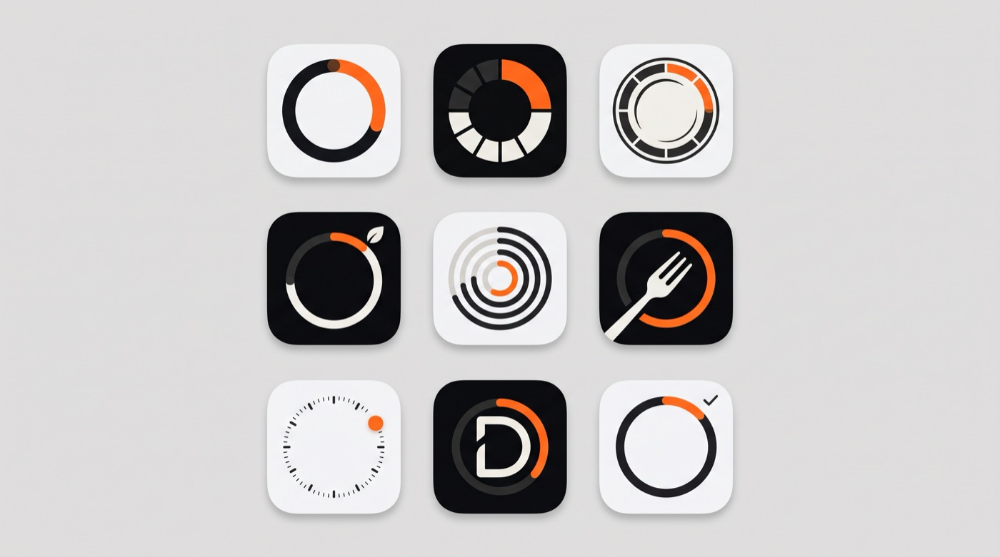
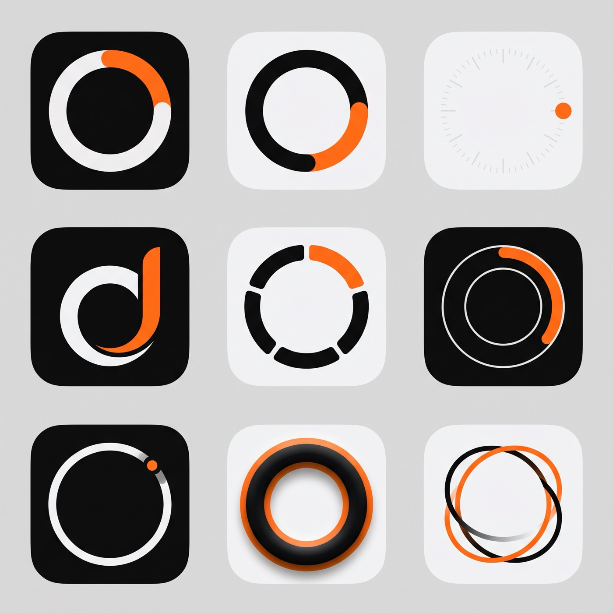
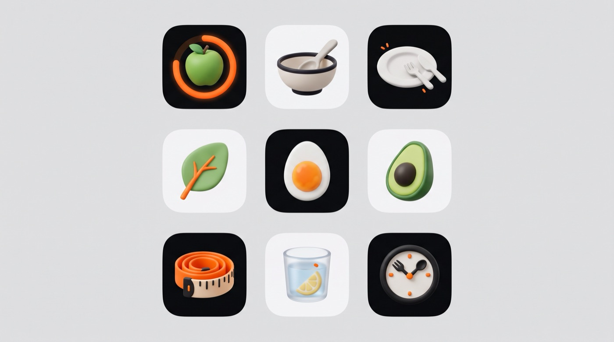
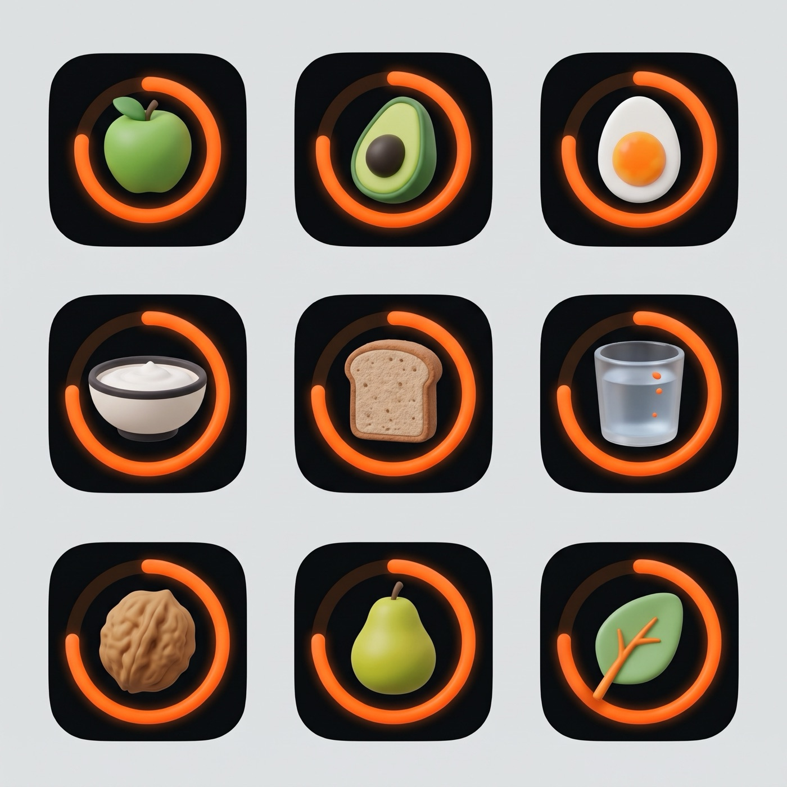
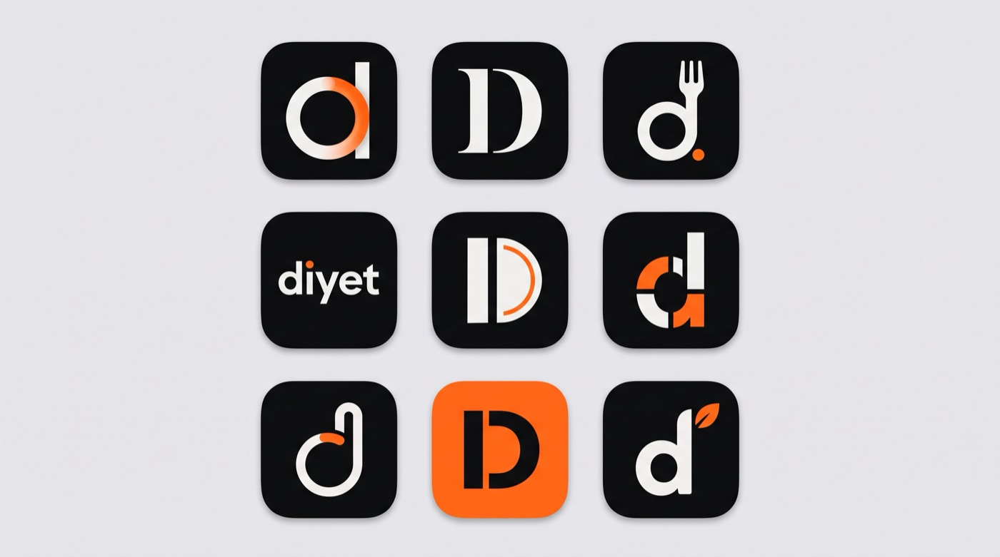
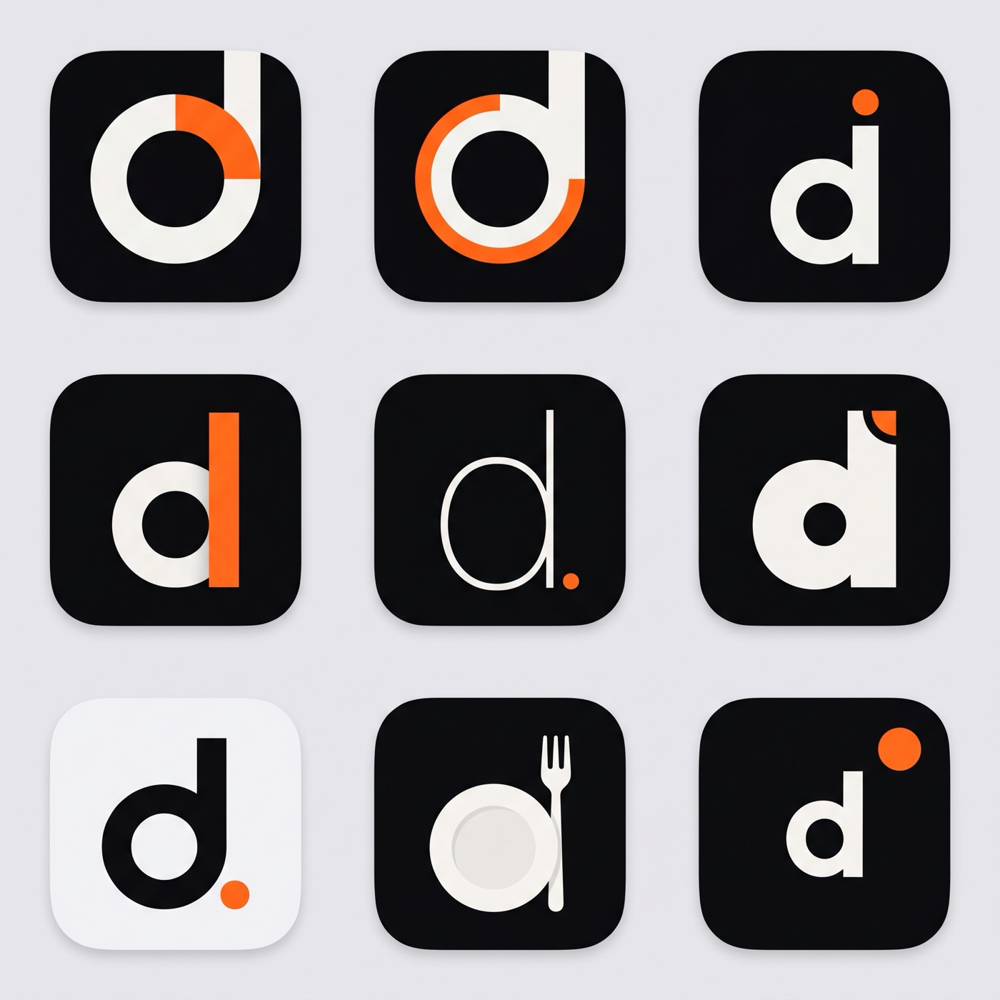
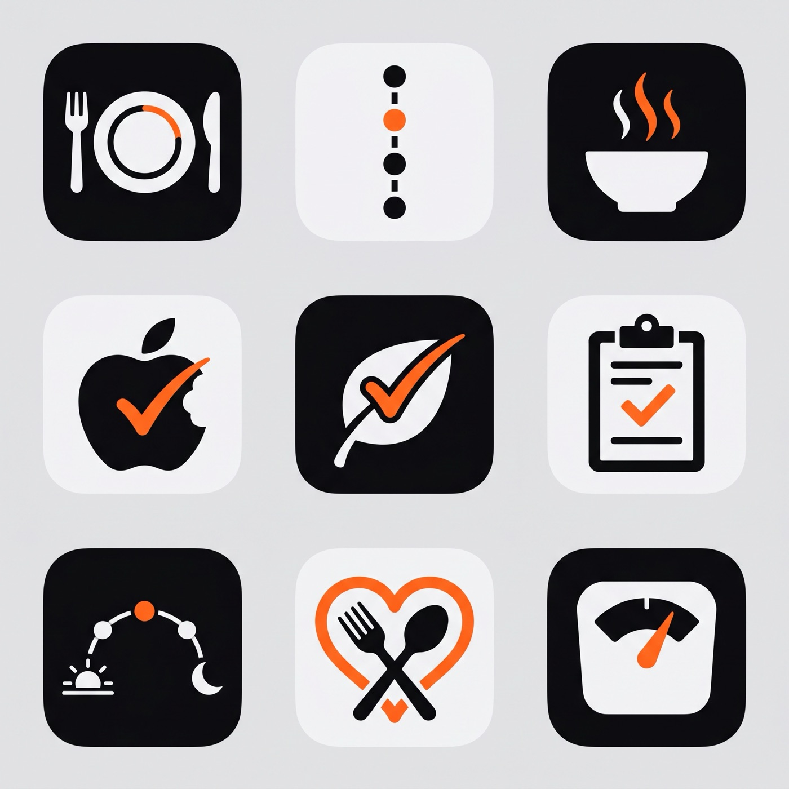
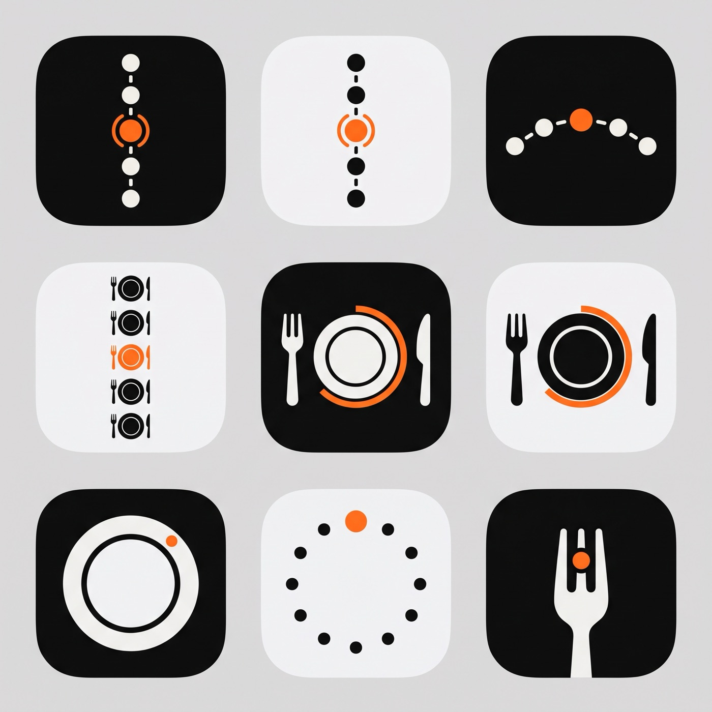
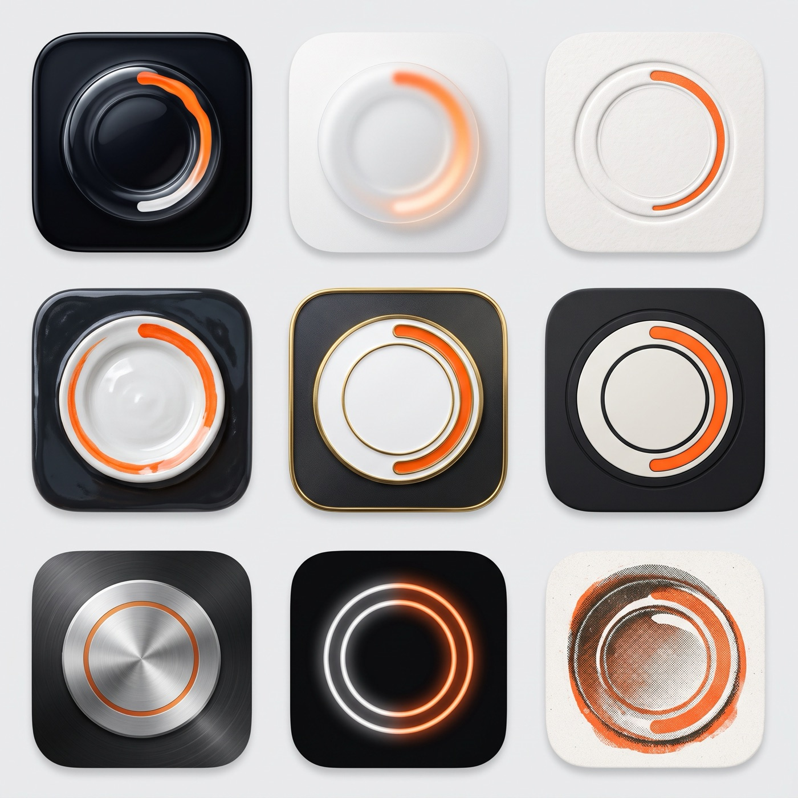
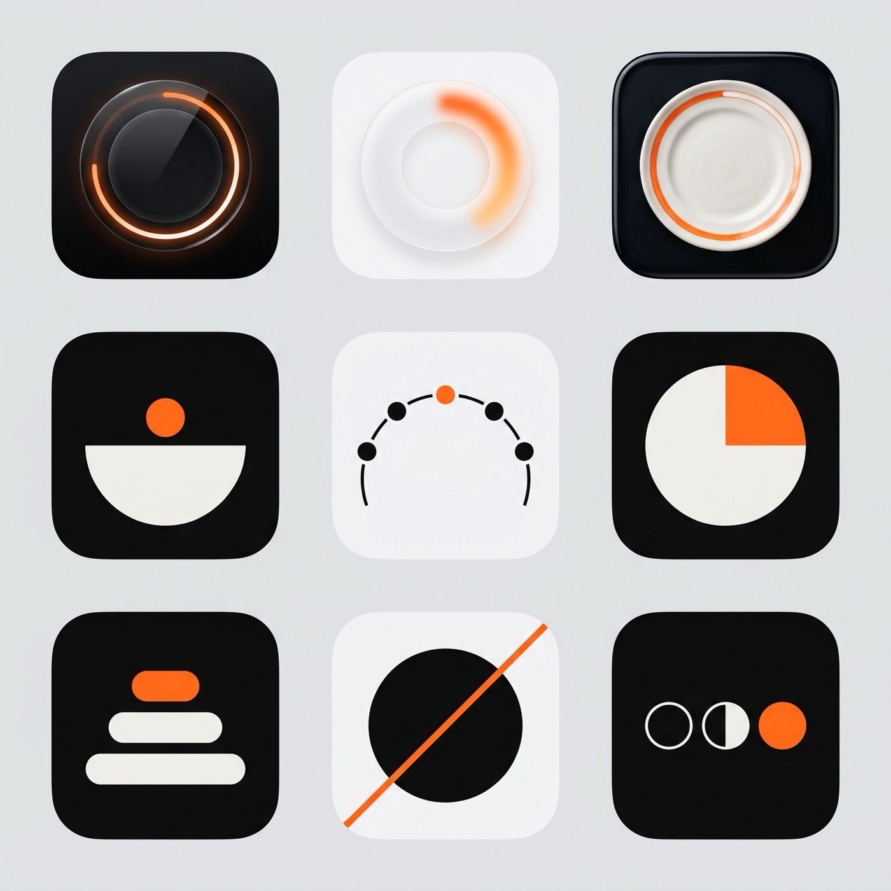

Diyet · uygulama ikonu · 16 Kasım 2026
Gemini 3.1 Pro görsel modeliyle beş yönde on set, toplam 90 ikon. Her yönde önce geniş bir tarama, sonra en güçlü fikirlerin inceltildiği ikinci tur var. Bütün setler uygulamanın kendi paletiyle istendi: neredeyse siyah, kırık beyaz ve yalnızca "şimdi" için turuncu.
Öne çıkanlar
Ana ekranda 60 px'te, Ayarlar listesinde 29 px'te okunması gerekiyor. Bu dördü küçükte de tek bakışta anlaşılıyor ve uygulamanın içindeki dille aynı şeyi söylüyor.
Siyah zeminde dörtte üçü dolu kırık beyaz halka, son dilim turuncu. Uygulamadaki gün kadranlarının ve öğün halkalarının aynısı; ikon açılınca gördüğün şeyin özeti.
Halka · 2. tur · sol üstKüçük d harfinin karnı ilerleme halkası. Halkaya ad da ekliyor; ileride diyetisyen paneliyle marka olarak taşınabilir.
Harf · 2. tur · sol üstDikey öğün noktaları, şimdiki öğün turuncu. Bugün ekranının kendisi. Halkalar arasında kaybolmaz, en ayırt edici siluet bu.
Düz · 2. tur · sol üstGıda ikonlarında seçtiğin yumuşak 3D dille aynı aile. En sıcak ve en "yemek" olanı; ama halkadaki parlama küçükte bulanıklaşabilir.
3D · 2. tur · sol üstA · Halka ve kadran

Güçlü: turuncu dilimli kalın halka, 24 saatlik kadran ve halkadan d. Zayıf: çatallı halka ve iç içe halkalar kalabalık.

Güçlü: sol üst ve sağ alt (halkada gezen turuncu nokta) en temizleri. Beş öğün yayına bölünmüş halka uygulamanın mantığını en doğru anlatan. Zayıf: tombul 3D halka ve iç içe iki halka markadan sapıyor.
B · Yumuşak 3D

Güçlü: halkalı elma tek başına öne çıktı; ikinci tur onun üzerine kuruldu. Zayıf: çatal-kaşık saat ve mezura birer illüstrasyon, ikon değil.

Güçlü: elma, avokado ve yumurta net. Aynı şablonla bir seri ikon (alternatif ikonlar) çıkabilir. Zayıf: ekmekte gözenekli doku var, kaçındığın türden. Ceviz kahverengi bir top gibi okunuyor.
C · Harf

Güçlü: halka karınlı d ve turuncu noktalı d. Zayıf: "diyet" yazısı 29 px'te okunmaz; şablon d ve tırnaklı D başka bir markaya ait gibi.

Güçlü: üst sıradaki ilk ikisi ve sol alttaki açık zeminli d. Zayıf: "di" gibi okunanlar (sağ üst, sağ orta) karışıklık yaratır; tabak ve çatallı d harfe benzemiyor.
D · Düz sembol

Güçlü: halkalı tabak ve zaman çizelgesi. Zayıf: ısırılmış elma Apple logosuna fazla benziyor, App Store'da sorun çıkarır. Kalp, terazi ve pano stok ikon gibi.

Güçlü: dikey çizelge (iki temada), gün yayı ve çatal-bıçaklı halkalı tabak. Zayıf: küçük tabaklardan çizelge 29 px'te dağılır.
E · Malzeme ve soyut

Güçlü: siyah cam (iOS 26 Liquid Glass'a yakın) ve kabartma kâğıt. Zayıf: altın kenarlı emaye ve risograf uygulamanın sakinliğine uymuyor.

Güçlü: güneşli kâse, gün yayı, sabah-öğle-akşam üç daire. Zayıf: çeyrek dilimli daire bir grafik uygulaması gibi; çizgiyle kesilen daire "yasak" işareti çağrıştırıyor.
Sonraki adım
icon-180.png ve icon-512.png değişir, sw.js sürümü artar.